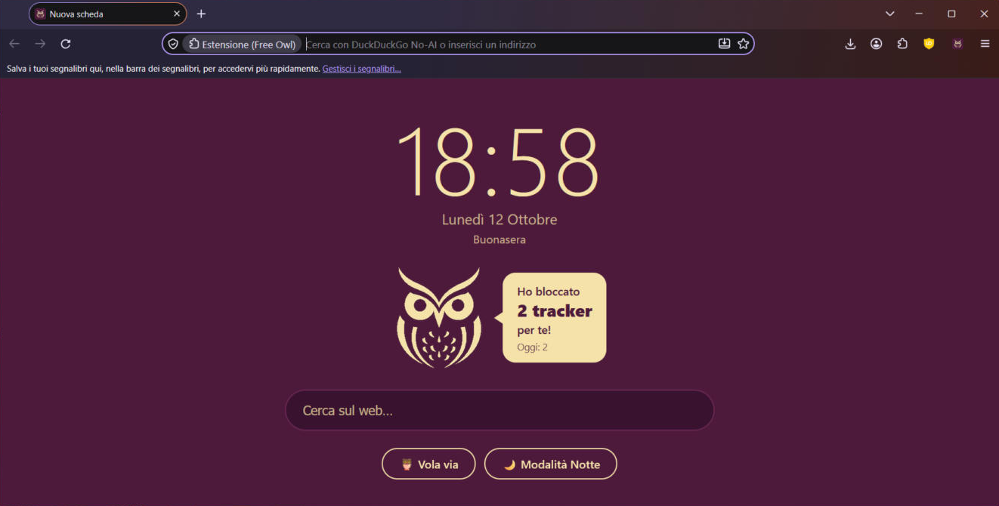

Naviga libero.
Il gufo veglia su di te.
Free Owl è un browser gratuito che blocca i tracker, rifiuta i cookie e non ti spia. Basato su LibreWolf e Firefox.

Cosa fa il gufo per te
Tutta la protezione di LibreWolf, più qualche idea tutta nostra.
Contatore dei tracker
Il gufo ti dice quanti tracker ha bloccato per te, oggi e in totale.
Vola via
Un clic e cancelli cookie, cronologia e schede aperte. Password e account restano al sicuro.
Modalità Notte
Rende scuri tutti i siti chiari, lasciando foto e video con i colori giusti.
Nuova scheda tranquilla
Orologio, data e ricerca veloce. Niente pubblicità, niente notizie che ti distraggono.
Ricerca senza spie
Google e Bing sono rimossi. Usi DuckDuckGo, Brave Search, Startpage, Mojeek o Qwant.
Meno cookie
Cookie di terze parti bloccati e banner dei cookie rifiutati in automatico.
HTTPS sempre
Ogni sito viene aperto in modo cifrato, quando è possibile.
uBlock Origin incluso
Il miglior blocco pubblicità, già pronto, con le liste italiane.
Installa Free Owl
Ci vuole un minuto. Scegli il tuo sistema:
- Scarica lo zip per Windows.
- Estrailo dove vuoi (tasto destro → Estrai tutto), per esempio in
Documenti. - Apri
FreeOwl.exe. Fatto!
Il modo più facile: AppImage
- Scarica l'AppImage.
- Tasto destro sul file → Proprietà → spunta "Consenti di eseguire come programma".
- Doppio clic per aprirlo.
Oppure dal terminale:
chmod +x FreeOwl-*.AppImage
./FreeOwl-*.AppImagePer averlo nel menu delle applicazioni
Scarica il .tar.gz e lancia:
tar -xzf FreeOwl-*-linux-x86_64.tar.gz
./freeowl/install.shsudo. Funziona su Ubuntu, Pop!_OS, Linux Mint, Fedora e le altre distribuzioni a 64 bit.Quale scaricare?
Clicca la mela in alto a sinistra → Informazioni su questo Mac: se c'è scritto Chip Apple M1, M2, M3, M4… scegli Apple, se c'è Processore Intel scegli Intel.
Installazione
- Apri il file
.dmgscaricato. - Trascina Free Owl nella cartella Applicazioni.
- Apri Free Owl da Applicazioni.
- Clicca Fine sull'avviso.
- Apri Impostazioni di Sistema → Privacy e sicurezza.
- Scorri in basso e clicca Apri comunque accanto a "Free Owl", poi conferma con la tua password.
Se preferisci il Terminale:
xattr -dr com.apple.quarantine "/Applications/Free Owl.app"Domande
Le cose che ci chiedono più spesso.
È davvero gratis?
Sì, completamente. Free Owl è open source: il codice è pubblico su GitHub e chiunque può controllarlo.
È sicuro?
Free Owl è basato su LibreWolf, che a sua volta è Firefox senza telemetria e con la privacy al massimo. Free Owl cambia solo nome, logo, alcune impostazioni e aggiunge l'estensione del gufo. Ogni giorno un robot controlla se esce una nuova versione di LibreWolf e aggiorna Free Owl da solo.
Come si aggiorna?
Scarica la nuova versione da questa pagina. Su Windows copia la cartella Profiles della vecchia versione dentro la nuova per tenere segnalibri e impostazioni. Su Linux e Mac i tuoi dati restano dove sono: basta sostituire l'app.
Posso usare il mio account Mozilla?
Sì! Puoi accedere al tuo account Mozilla per sincronizzare segnalibri e password con gli altri dispositivi. I dati sono cifrati end-to-end.
Un sito non funziona bene, cosa faccio?
Free Owl blocca molte cose per proteggerti. Clicca sullo scudo nella barra degli indirizzi e disattiva la protezione solo per quel sito.